01 / OUR STORY
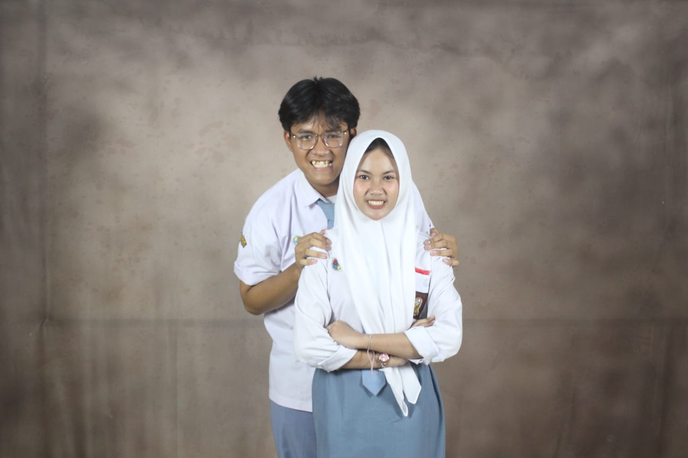
Awalnya Satu Organisasi
Awalnya kita cuma satu organisasi. Nggak pernah kepikiran kalau dari tempat ini, bakal ada cerita tentang kita.

Awalnya kita cuma satu organisasi. Nggak pernah kepikiran kalau dari tempat ini, bakal ada cerita tentang kita.
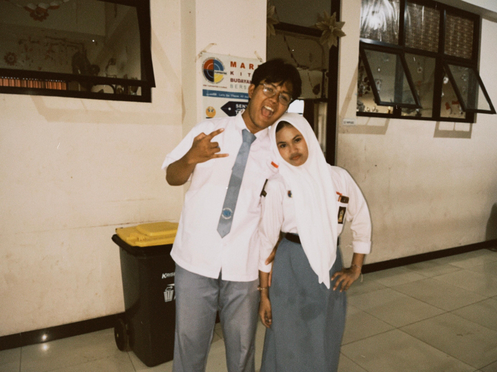
Awalnya cuma tahu nama. Ketemu kalau ada kegiatan, ngobrol seperlunya, lalu lanjut dengan kesibukan masing-masing.
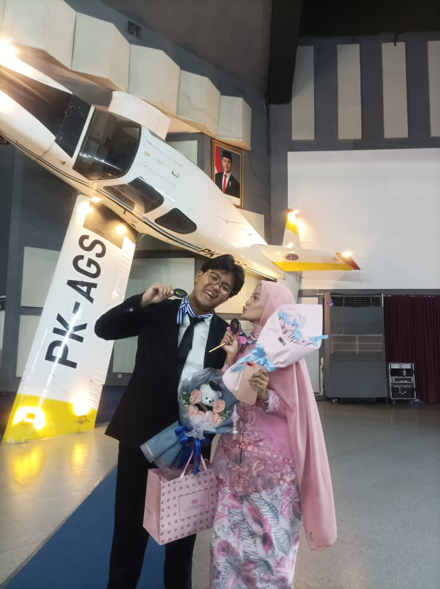
Lama-lama kita jadi lebih sering ketemu. Entah karena kegiatan, rapat, atau memang kebetulan yang terlalu sering terjadi.
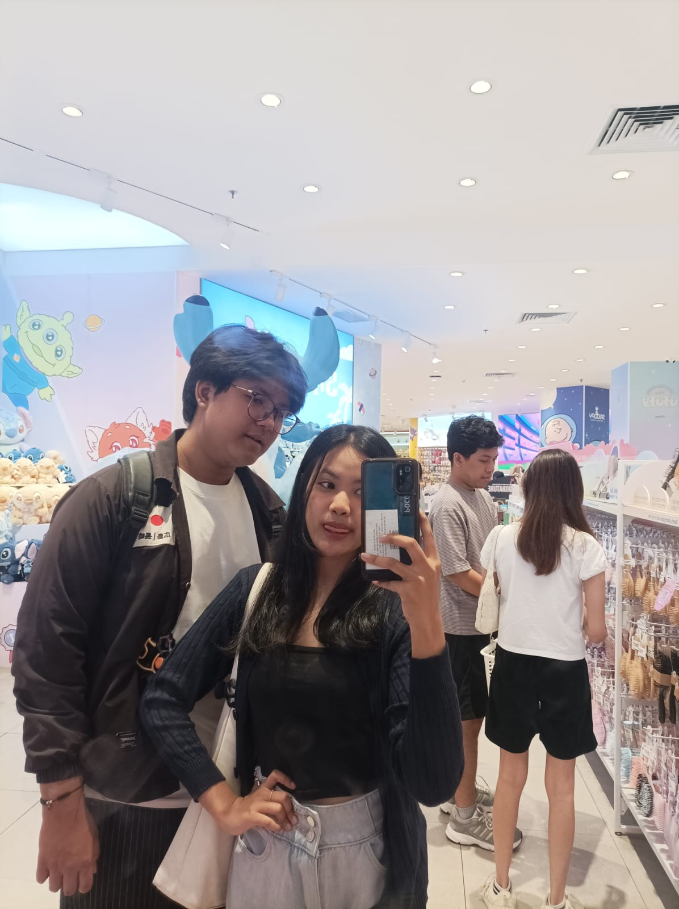
Dari yang awalnya cuma ngobrol soal organisasi, mulai merembet ke hal-hal random. Dan ternyata ngobrol sama kamu nggak pernah terasa membosankan.
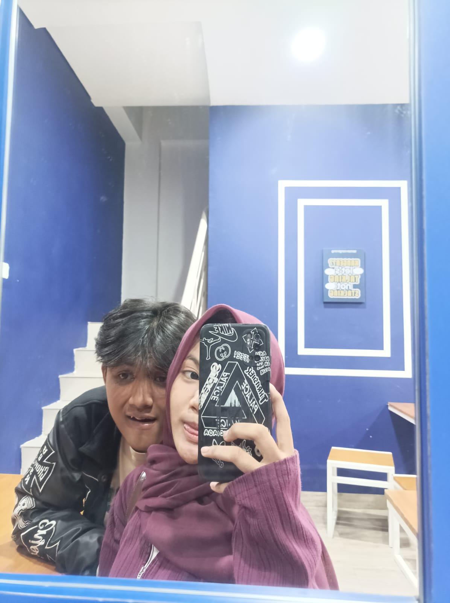
Kadang kita ngomongin hal yang nggak penting sama sekali. Tapi justru dari obrolan kecil itu, kita jadi makin mengenal satu sama lain.
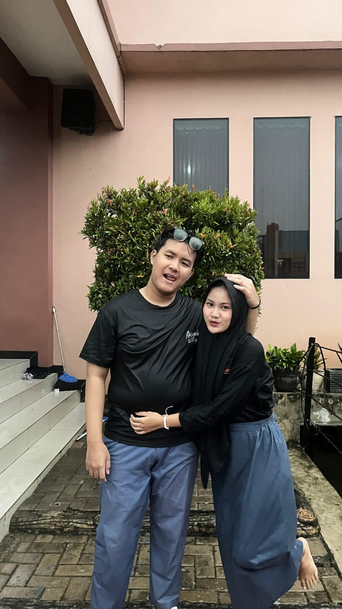
Tanpa sadar, kita mulai nyaman. Nggak perlu terlalu banyak mikir buat mulai ngobrol atau sekadar bercanda.
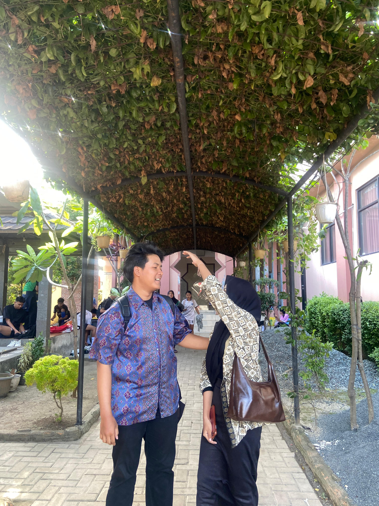
Sampai akhirnya ada sesuatu yang mulai terasa berbeda. Yang tadinya biasa saja, perlahan mulai jadi sesuatu yang ditunggu.
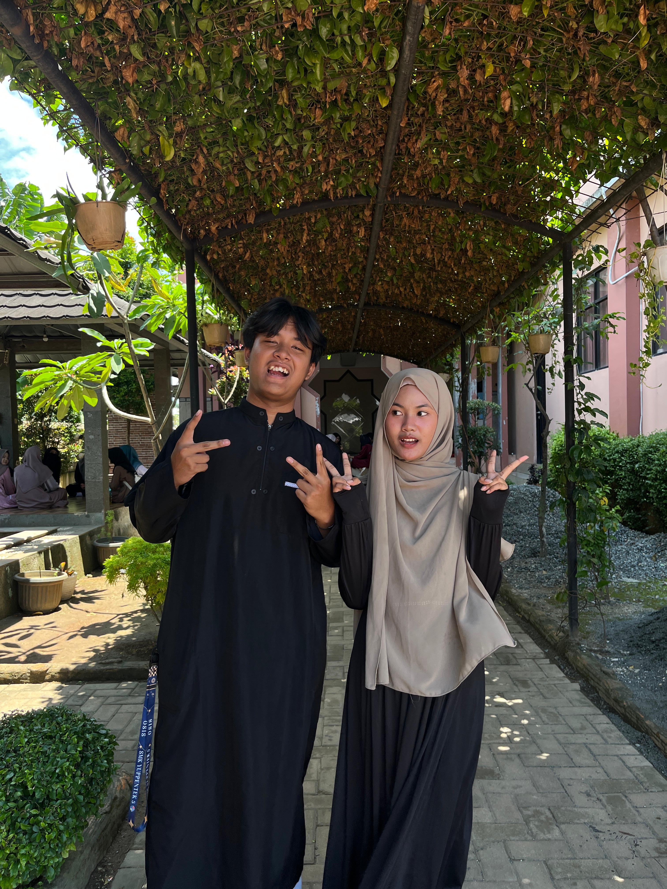
Mulai senang kalau ketemu. Mulai nunggu chat, nunggu kesempatan ngobrol, bahkan kadang cuma berharap bisa ketemu lagi.
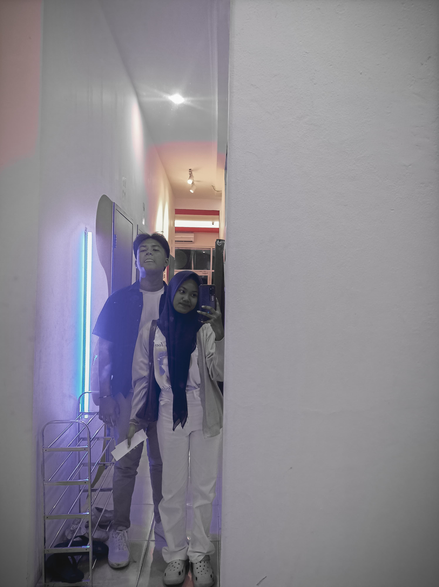
Mungkin dari sini kita mulai sadar. Kayaknya hubungan ini sudah nggak sesederhana teman satu organisasi.
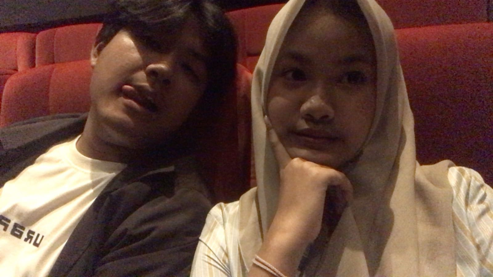
Bukan cuma tentang momen besar. Justru hal-hal kecil yang sederhana malah jadi bagian yang paling diingat.
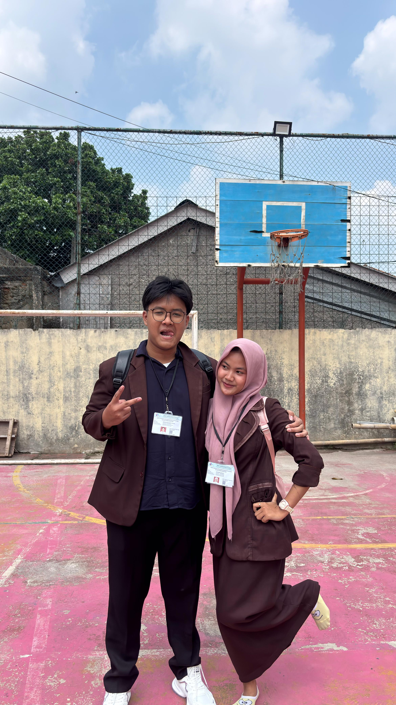
Nggak ada yang pernah merencanakan semuanya. Kita cuma menjalani hari seperti biasa, sampai akhirnya kedekatan itu tumbuh sendiri.
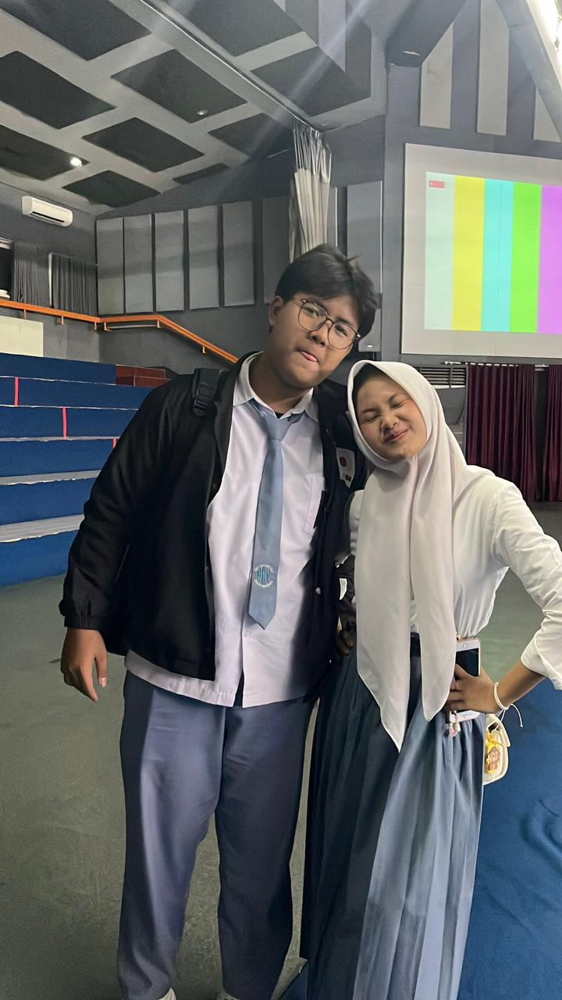
Kalau dipikir-pikir, lucu juga. Dari dua orang yang awalnya cuma saling kenal, akhirnya bisa sampai sedekat ini.
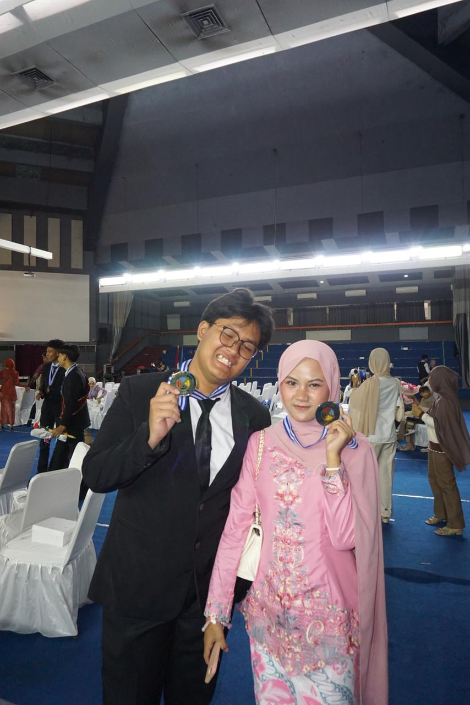
Dan ternyata benar. Awalnya satu organisasi, sering ketemu, sering ngobrol, lalu... ujung-ujungnya cinlok. ♡
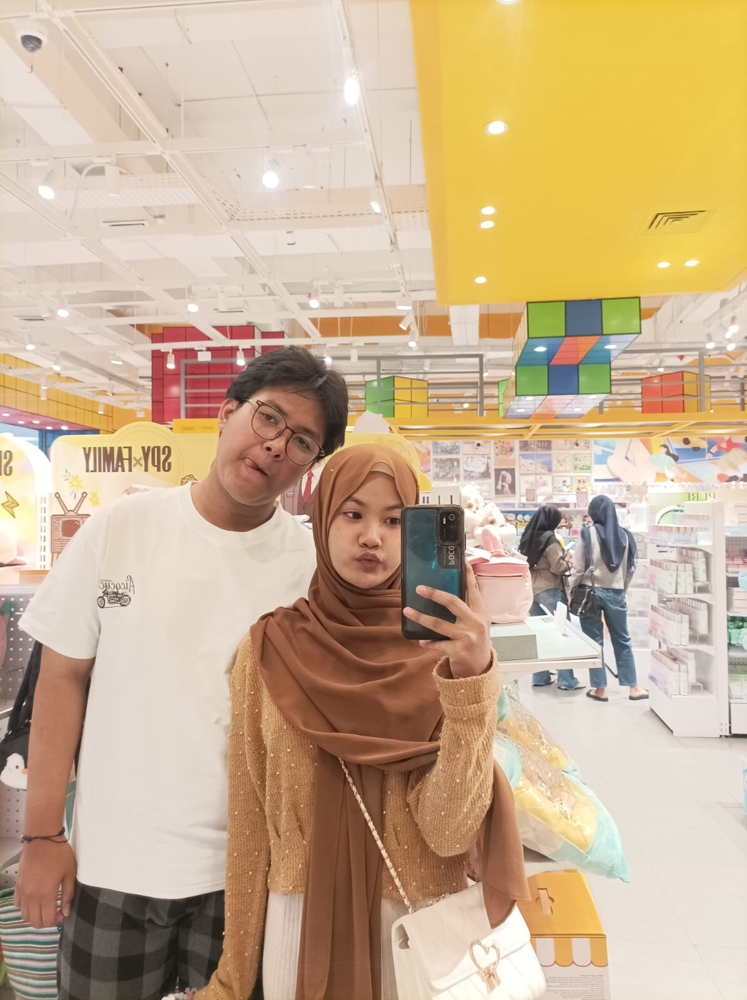
Dari semua hal yang terjadi di organisasi itu, mungkin salah satu yang paling berkesan adalah kita bisa saling menemukan. Sesuatu yang awalnya nggak pernah direncanakan.
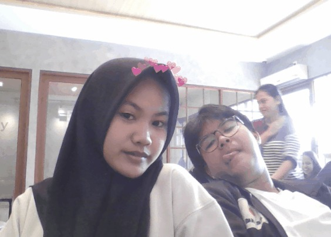
Mungkin cerita kita dimulai dari hal yang sederhana. Tapi siapa sangka, dari satu organisasi bisa lahir cerita tentang kita. Dan sampai sekarang, cerita itu masih terus berjalan. ♡
Bebe,
Jujur aku masih agak bingung harus mulai dari mana.
Soalnya kalau dipikir-pikir, awalnya kita tuh biasa aja. Cuma satu organisasi, sering ketemu karena kegiatan, ngobrol seperlunya, terus lanjut dengan kesibukan masing-masing.
Nggak pernah kepikiran kalau orang yang awalnya cuma aku kenal dari satu organisasi, ternyata bakal jadi orang yang paling sering aku cari.
Kalau dari awal udah tahu bakal begini, mungkin aku juga bakal ketawa sendiri. 😭
Tapi ternyata hidup emang suka bikin plot twist yang nggak diminta.
Pelan-pelan kita jadi sering ketemu. Mulai sering ngobrol. Mulai bahas hal-hal random yang kadang kalau dipikir lagi sebenarnya nggak penting-penting amat.
Tapi anehnya, aku betah.
Dari yang awalnya cuma ngobrol karena ada urusan organisasi, berubah jadi ngobrol karena emang pengen ngobrol.
Terus mulai ada fase di mana aku nunggu chat dari kamu.
Padahal kadang aku sendiri juga nggak tahu nunggu apaan.
Chatnya belum tentu penting. Kadang cuma nanya hal sederhana.
Tapi tetep aja ditunggu.
Ya... begitulah. Harga diri perlahan hilang. 😭
Sampai akhirnya aku sadar kalau ternyata aku udah nyaman banget sama kamu.
Bukan cuma nyaman buat ngobrol, tapi nyaman buat jadi diri aku sendiri.
Dan menurut aku, itu salah satu hal yang paling aku syukuri dari hubungan kita.
Aku nggak harus selalu kelihatan keren. Nggak harus selalu punya bahan obrolan. Kadang kita bisa ngobrol nggak jelas, ketawa karena hal receh, atau bahkan cuma diem-dieman, tapi tetap terasa nyaman.
Terus sampailah kita di tanggal yang sekarang jadi salah satu tanggal paling penting buat aku.
14 Mei 2025.
Hari di mana cerita kita akhirnya resmi jadi cerita kita.
Kalau waktu itu ada yang bilang ke aku, “Nanti orang yang awalnya cuma kamu kenal di organisasi bakal jadi orang yang paling sering kamu cari.”
Mungkin aku bakal jawab, “Ngaco.”
Tapi ternyata bener.
Dan sekarang, setelah semua yang kita lewatin, aku baru sadar kalau ternyata kebahagiaan itu sering datang dari hal-hal yang sederhana.
Dari ketemu. Dari ngobrol. Dari ketawa bareng. Dari saling cerita hal random. Dari punya seseorang yang bisa aku cari ketika hari aku lagi berantakan.
Bebe, aku tahu aku bukan orang yang selalu bisa ngomong romantis.
Kadang malah lebih sering bercanda daripada ngomong serius.
Kadang mungkin aku juga ngeselin. Kadang sok cuek. Kadang bikin kamu kesel.
Oke, mungkin bukan kadang. 😭
Tapi di balik semua itu, aku harap kamu tahu satu hal:
aku sayang sama kamu.
Dan aku beneran bersyukur bisa ketemu sama kamu.
Aku nggak tahu nanti kita bakal menghadapi apa.
Mungkin bakal ada hari yang gampang. Mungkin ada juga hari yang berat. Mungkin nanti kita bakal beda pendapat, kesel, capek, atau sama-sama butuh waktu.
Tapi aku berharap, kalau hari-hari itu datang, kita nggak langsung lupa sama semua alasan kenapa kita mulai.
Karena aku nggak cuma mau punya cerita yang bagus sama kamu.
Aku juga mau tetap ada ketika ceritanya lagi nggak bagus-bagus amat.
Aku mau tetap nemenin kamu ketika semuanya terasa gampang, tapi juga ketika semuanya terasa berat.
Dan kalau suatu hari nanti kita lihat lagi semua foto dan tulisan di flipbook ini, aku pengen kita bisa ketawa sambil bilang,
“Gila ya... ternyata dulu kita pernah serandom ini.”
Terus mungkin kita bakal saling lihat dan sadar,
ternyata dari dua orang yang awalnya cuma satu organisasi...
kita bisa sampai sejauh ini.
Makasih ya, bebe.
Makasih udah datang. Makasih udah bertahan. Makasih udah jadi bagian dari hidup aku.
Dan makasih karena sampai hari ini, masih mau jalan bareng aku.
Aku nggak bisa janji semuanya bakal selalu sempurna.
Tapi aku bisa janji, selama aku masih dikasih kesempatan buat ada di samping kamu, aku bakal terus berusaha jadi seseorang yang pantas buat nemenin kamu.
14 Mei 2025 bukan cuma tanggal jadian buat aku.
Itu adalah tanggal ketika salah satu cerita terbaik dalam hidup aku dimulai.
Dan sampai sekarang...
aku masih mau nulis cerita itu sama kamu.
Happy anniversary, bebe.
Jangan bosen sama aku ya.
Walaupun aku tahu...
kadang aku emang nyebelin banget. 😭